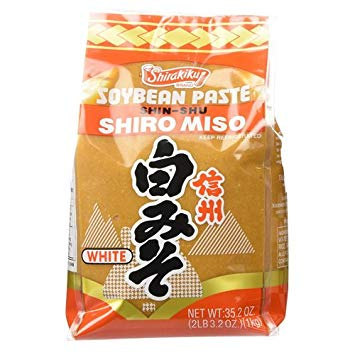

miso aubergine
nasu dengaku
the other nice thing to do with an aubergine - this definitely works best with the smaller sino-japanese ones: if you only have the big guys, cut lengthways into half-inch thick slices to make sure it cooks through
- 2 tbsp sake
- 2 tbsp mirin

- 2 tbsp sugar
- 4 tbsp miso
- 2 chinese obes or one big obe

- cut the aubergines lengthways. crosshatch the surface of the obes by about a third of an inch, brush or cover both sides in generous amount of oil (but not soaked), and bake at 400f, skin side down.
- simmer the sake mirin sugar and miso together in a pan over a low heat for a few minutes with a little water if necessary, till it thickens.
- when the aubergine is soft and golden brown on top, spread the top side with the miso mixture and broil on high heat for a few minutes to let the top caramelise.